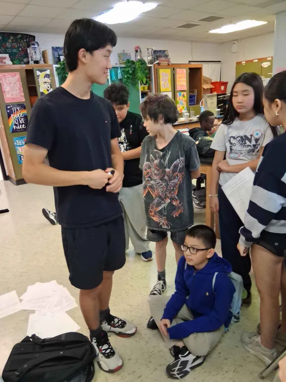
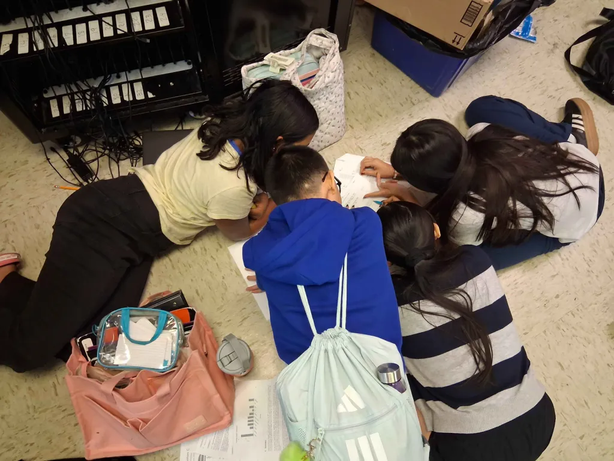
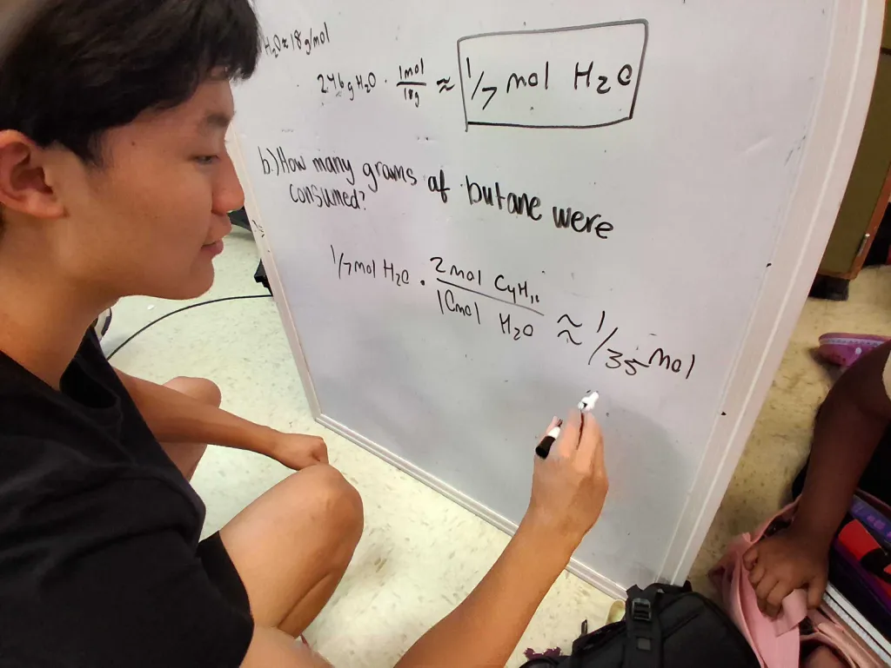

Students teaching students to think like scientists.
We're a group of high schoolers who've competed in Science Olympiad. We go to middle school team practices and work with students in small groups, because one coach can't get to dozens of kids across 20+ events.
Louisville, KY · since 2024

- Year started
- 2024
- Students tutored
- [FILL IN]
- Practice sessions led
- [FILL IN]
- Events covered
- [FILL IN]
Our story
We started Scioly Prep in 2024 after seeing the same thing at almost every practice: one coach, a room full of students, and more than 20 events to cover. Coaches do a lot, but there's only one of them.
So we show up and split the room. Some of us sit on the floor with a group working through a practice test. Someone takes the whiteboard and breaks down a problem that tripped people up. Others go desk to desk, checking work one-on-one.
We competed recently, so we still remember where we got stuck. That's usually where we start.

Our mission
Help every Science Olympiad student walk into competition knowing how to solve the problem, not just the answer to one.
One problem, start to finish
From a real session: if burning butane made 2.46 g of water, how many moles of water is that, and how many grams of butane were used up?
2C4H10 + 13O2 → 8CO2 + 10H2O
-
Step 1: Set up the givens
Balanced equation first, then write down what you know. Water is 18 g/mol.
-
Step 2: Draw the butane
Sketch C4H10 so everyone can see what's burning: four carbons in a chain, ten hydrogens around them.
-
Step 3: Grams to moles
2.46 g H2O × 1 mol18 g ≈ 17 mol H2O
-
Step 4: Use the mole ratio
17 mol H2O × 2 mol C4H1010 mol H2O ≈ 135 mol butane
The 2 and the 10 come straight from the balanced equation.
Then we stopped. Turning 1/35 of a mole of butane into grams was the students' job.

Want Scioly Prep at your team's practice?
Tell us when your team meets and which events you need help with.